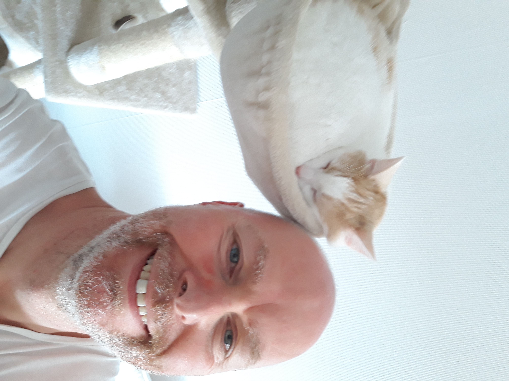

Dit is wie ik ben
Waarom deze opleiding?
Ik heb een technische achtergrond waar ik jaren werkzaam in ben geweest, mijn grote passie voor fotografie heeft er voor gezorgd dat programmeren mijn interesse heeft gewekt. Door vaak op YouTube tutorials te kijken heb ik al wel iets opgestoken van HTML & CSS. Met deze opleiding hoop ik een baan te vinden als programmeur.
Verder woon ik samen en hebben wij een poes genaamd Lana. Op de foto kun je mij samen met Lana zien.